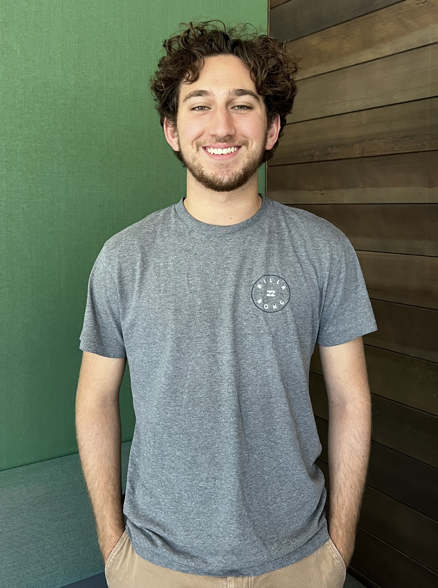

Biography
My name is Patrick, and I'm a junior at Northwestern majoring in Computer Science and minoring in Data Science
and Engineering. Growing up with Silicon Valley right in my backyard, my passion for engineering and technology
began at a young age. I've always loved creating things for others—from building a chessboard in high school
woodshop for my chess-loving family to selling personally-made math packets on a busy street corner as a kid,
I've always been passionate about leveraging my skills to create something useful for others. |
 |